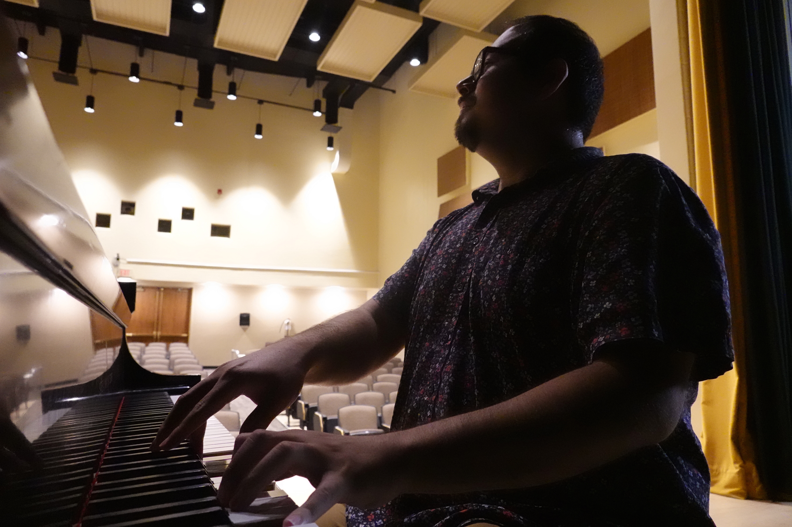

Instrumental Catalog
Works in progress
Instrumental works are being added to this catalog. Check back soon, or reach out directly for inquiries.
Composer Website
Instrumental, chamber, and ensemble writing
Instrumental and chamber works, as they become available.

Instrumental Catalog
Instrumental works are being added to this catalog. Check back soon, or reach out directly for inquiries.